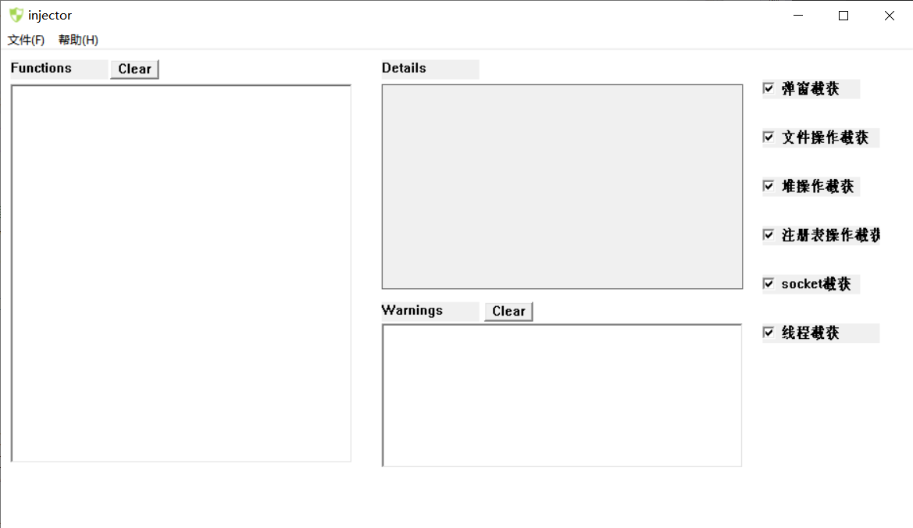

# 项目说明
对于无源码情况下分析样本程序的行为，有多种方法。其中，基于 API HOOK 的方法是本次软件安全课程设计的任务。
APIGuard 是我们设计的一款轻量级的、基于 Detours 库开发的异常行为检测软件。它的前端采用 MFC 开发，后端依赖 Detours 库，完成 dll 注射以及 Win API 截获的功能。
其具体功能如下：
- APIGuard 能够完成对大部分弹窗、堆操作、文件操作、注册表操作、socket 操作和线程进程操作完成截获，并将调用的参数告知使用者。
- APIGuard 能够选择是否提示弹窗、堆操作、文件操作、注册表操作和 socket 操作的截获。
- APIGuard 能够告知用户程序企图创建进程并运行的程序名，并让用户选择是否运行。
- APIGuard 能够在截获的基础上完成一些异常行为分析，如程序自我复制、堆二次释放和创建恶意进程等。
- 一些基本的软件信息，包括版权所有（
也许没用）、联系作者和开源仓库跳转等。
# 环境搭建
你可以在发行版中直接下载最新版 APIGuard，也可以搭建环境参与 APIGuard 开发：
一些基本的操作流程如下：
- 下载安装 Visual Studio 2022；
- 下载 Detours 4.0.1 源码，并完成编译；
- 打开 OurWork/Dll1/Dll1.sln 和 OurWork / 注射器 /injector/injector.sln，选择 “项目”-“属性”-“VC++ 目录”，修改包含目录和库目录为你的 Detours 4.0.1 编译结果路径。
- 参与开发，丰富功能。
# 使用说明
我们强烈建议在使用时关闭搜狗拼音，它会造成程序截获到未知原因的 “HeapFree” 等行为。

- 选择 “文件” - “打开” 运行可疑程序并开始截获。（如果你暂时不知道该运行什么，我们在 OurWork/app/app 中给出了一个测试程序）
- 程序会在 Functions 框中输出截获到的函数
- 单击 Functions 框，程序会在 Details 框中显示调用参数、调用时间等详细信息
- 当截获到一些潜在的危险行为，程序会在 Warnings 框中输出提示信息
- 选择 “帮助 (H)” 查看版权信息、联系我们。
# 开源仓库
项目的开源仓库链接：
APIGuard
APIGuard开源仓库